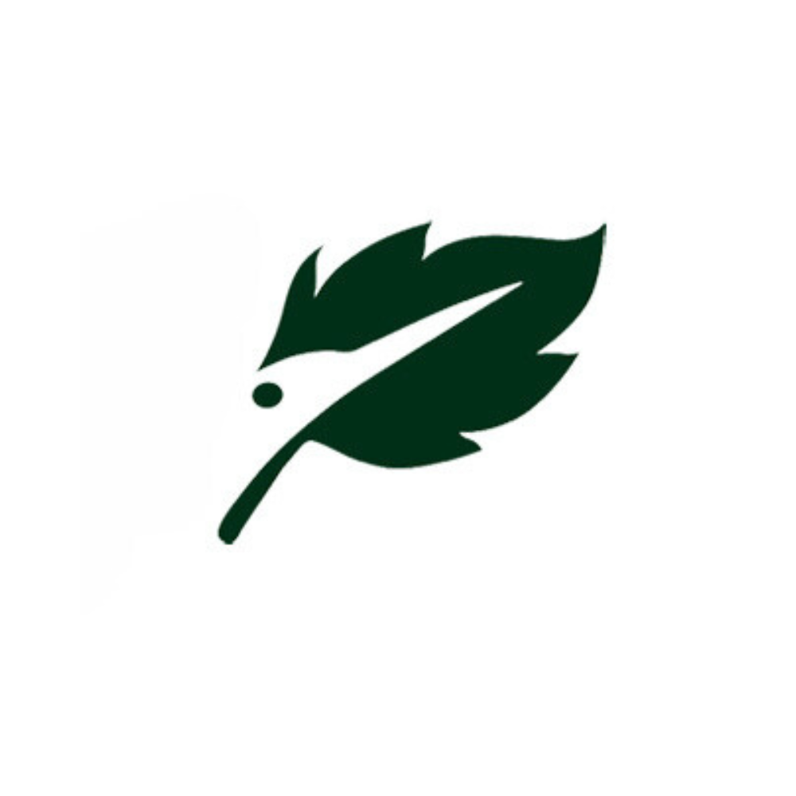

<ion-tabs>

  <ion-tab-bar slot="bottom">
    <ion-tab-button tab="tab1" href="/tabs/tab1">
      <ion-icon name="person-circle-outline"></ion-icon>
      <ion-label>Profile</ion-label>
    </ion-tab-button>

    <ion-tab-button tab="tab2" href="/tabs/tab2">
      <ion-icon name="people-outline"></ion-icon>
      <ion-label>Anggota</ion-label>
    </ion-tab-button>

    <!-- Tab untuk logo aplikasi -->
    <ion-tab-button></ion-tab-button>
    <!-- <ion-tab-button tab="qris" class="qris-tab">
      <div class="qris-icon">
        <div class="inner-circle">
          
        </div>
      </div>
    </ion-tab-button> -->

    <ion-tab-button tab="tab3" href="/tabs/tab3">
      <ion-icon name="information-outline"></ion-icon>
      <ion-label>Informasi</ion-label>
    </ion-tab-button>

    <ion-tab-button tab="tab4" href="/tabs/tab4">
      <ion-icon name="mail-outline"></ion-icon>
      <ion-label>Pesan</ion-label>
    </ion-tab-button>
  </ion-tab-bar>

</ion-tabs>

<ion-fab horizontal="center" vertical="bottom">
  <div class="d-flex justify-content-center">
    
  </div>
</ion-fab>